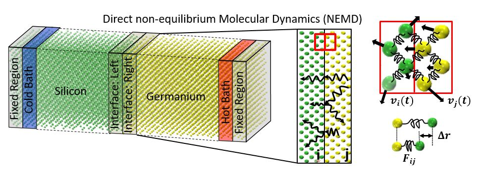
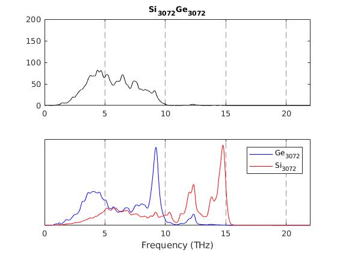
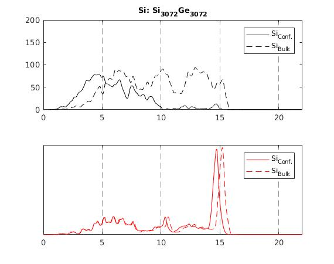
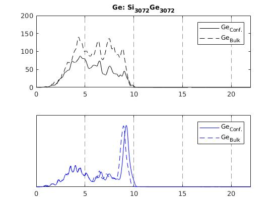
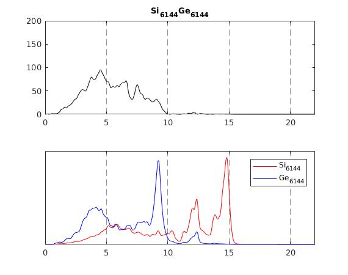
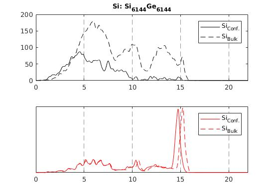
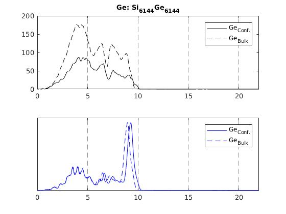

Tys Project
¶
Ty makes cool figures
See, check it out

Transmission Plots
A big thanks to Paul for producing all of the data.
Here are the plots!
     
Related Topics
Documentation overview
Previous:
About Transmission
Quick search